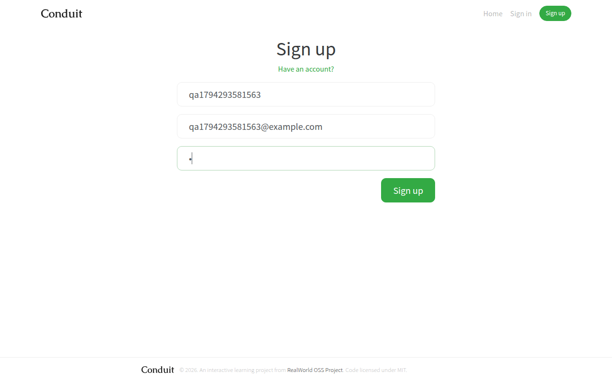
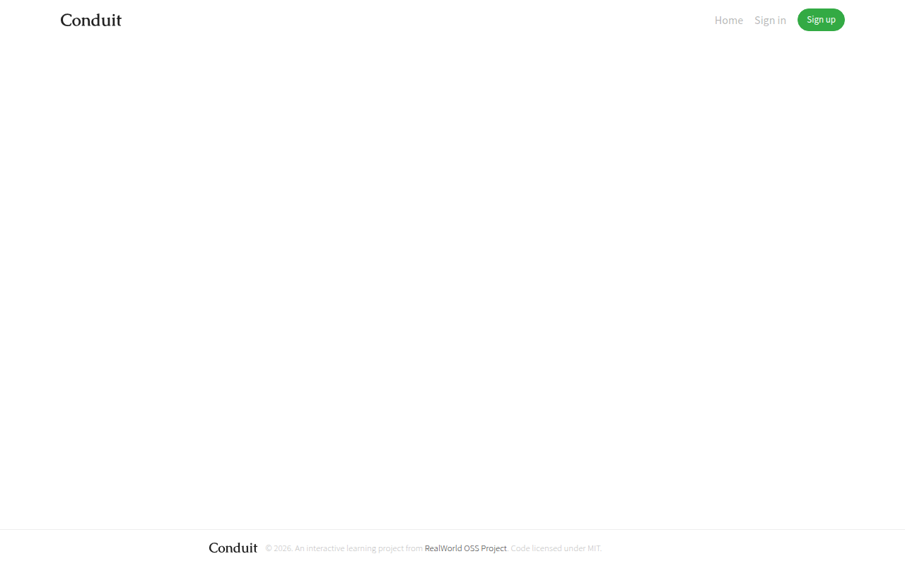
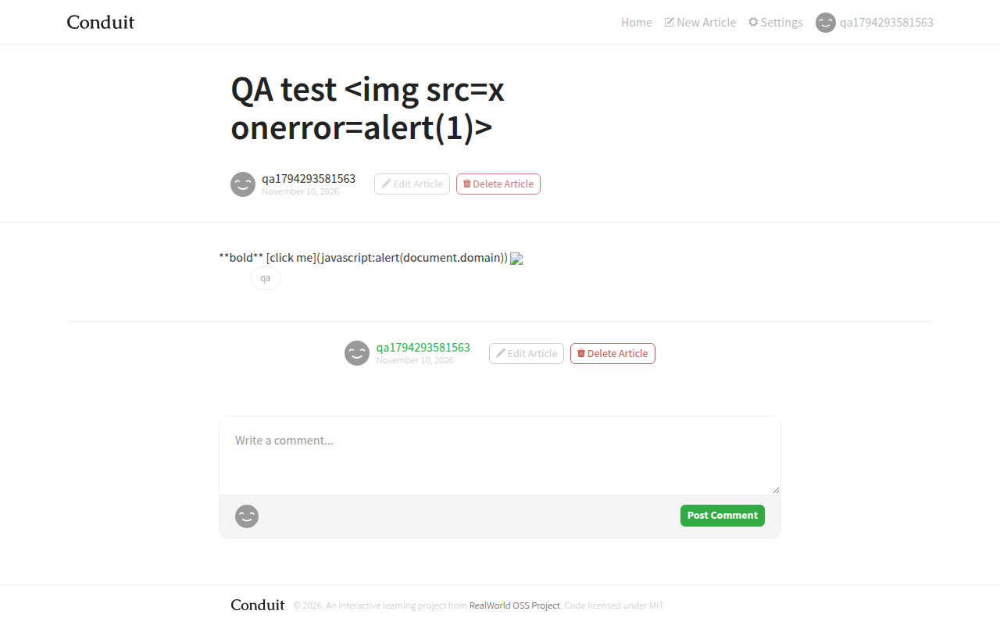
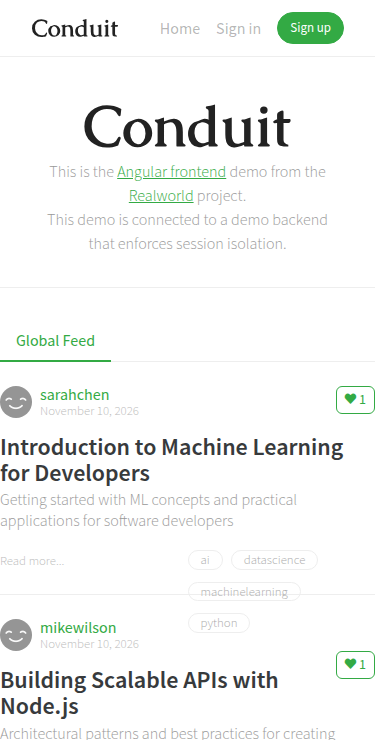

https://demo.realworld.show (Angular 21 frontend) + https://api.realworld.show/api · Tested 10 Nov 2026 · Tools: Chrome (Puppeteer-scripted flows), curl, DevTools network logThe app's main flows work: you can sign up, log in, write, edit and delete articles, and log out. Under normal use it does not “break”. The “feels broken” reports come from edge cases nobody guarded against:
None of these need a rewrite. Most are 1–10 line validation fixes on the server, plus small UI error states.
Note: the PDF's suggested demo.realworld.io no longer exists (it returns S3 “NoSuchBucket”). The project moved its official demo to demo.realworld.show, which is what I tested. That demo isolates sessions per browser, so an account created via curl cannot log in from the browser. I ran browser flows and API probes as separate sessions.
| # | Title / Summary | Steps to Reproduce | Expected vs Actual | Severity | Suspected Cause |
|---|---|---|---|---|---|
| 1 | Whitespace-only title creates an article with an empty slug. The article is orphaned: it can't be opened, edited or deleted. | Log in → POST /api/articles with {"title":" ","description":"d","body":"b"} (in the UI: type 3 spaces as the title). | Expected: 422 “title can't be blank”. Actual: 201 Created, "slug":"". GET /api/articles/ → 307/404, so the article is unreachable but still counts in the feed. | Critical | “Required” check runs on the raw string (" " is truthy). Slugify trims to “”, and nothing checks the slug is non-empty and unique. |
| 2 | No password strength rule: a 1-character password is accepted. | /register → username, email, password a → Sign up. | Expected: min. length (e.g. 8) with an inline message. Actual: account created, user logged in (screenshot A). | High | Registration validator only checks presence, not length or strength. The frontend form has no minlength either. |
| 3 | No brute-force protection on login. | Send 10 rapid POST /api/users/login with wrong passwords for one email. | Expected: throttling (429) or temporary lockout after N failures. Actual: all 10 return 401 immediately, with no delay or lock. | High | No rate-limit middleware or failed-attempt counter on the auth route. |
| 4 | Non-existent article URL shows a blank page. | Open /article/does-not-exist. | Expected: “Article not found” + link home. Actual: API returns 404, and the page renders only the header and footer, with no message (screenshot B). | Medium | Article resolver/component has no error branch for the 404 observable. The error is swallowed and the template renders with article = undefined. |
| 5 | Login email is case-sensitive. | Register qb…@example.com → log in with QB…@EXAMPLE.COM + correct password. | Expected: login succeeds (emails are case-insensitive in practice). Actual: 401 credentials invalid. | Medium | Email isn't normalised (trim().toLowerCase()) on register/login, and lookup is exact-match. |
| 6 | Whitespace-only username accepted. | POST /api/users with "username":" ". | Expected: 422. Actual: 201. The user exists with a blank display name, and their profile URL is /profile/%20%20%20. | Medium | Same root cause as #1: presence check without trimming. |
| 7 | Accessibility: form fields have no labels; images have no alt. | Inspect /login, /register, /editor; run a screen reader or axe. | Expected: each input has a <label> or aria-label, and avatars have alt.Actual: placeholder-only inputs (placeholders disappear when typing). 4 <img> without alt on the home feed. | Medium | Template uses placeholders as labels; avatar component omits alt. |
| 8 | Slow first load and API latency. | Load home page cold (desktop, normal network); time GET /api/articles?limit=10. | Expected: < 2–3 s to usable; API < 300–500 ms. Actual: 7.3–8.0 s to network-idle; API 0.5–2.0 s per call, /tags up to 1.7 s. | Medium | Cold or under-provisioned backend; no caching on read-only list endpoints; sequential requests on first paint. |
| 9 | Submitting an empty login form gives no feedback. | /login → click “Sign in” with both fields empty. | Expected: “Email is required” etc. Actual: nothing happens, with no message or focus change. | Low | Button disabled or validation errors not rendered for untouched fields. |
| 10 | Validation error reported against the wrong field. | POST /api/articles with a 5,000-char title. | Expected: {"errors":{"title":[…]}}.Actual: {"errors":{"body":["title is a string of less than 100 chars"]}}, so the UI highlights the wrong field. | Low | Schema-validator errors are mapped to the request body key rather than the property path. |
| 11 | Invalid pagination accepted silently. | GET /api/articles?limit=-1&offset=-5 | Expected: 400. Actual: 200 with articles: [] but articlesCount: 4, which is inconsistent. | Low | Query params are not range-validated. |
| 12 | CORS reflects any Origin with credentials allowed. | curl -I -H "Origin: https://evil.example" …/api/articles | Expected: allow-list of known frontends. Actual: access-control-allow-origin: https://evil.example + allow-credentials: true. | Low | CORS configured as origin: true. Lower risk here because auth is a header token, but it matters for the session cookie the demo uses. |
<img src=x onerror=alert(1)> and body <script>, [x](javascript:…), <img onerror> are all rendered escaped. No dialog fired and no javascript: links were present in the DOM (screenshot C).GET /api/articles/feed without a token → 401 token is missing.POST /api/articles {"article":{"title":" ","description":"d","body":"b"}}
→ 201 {"article":{"slug":"","title":" ",...}}
GET /api/articles/ → 307 redirect / 404 "article not found"
What happens: the server's “title is required” check only tests that the field exists and is a non-empty string. Three spaces pass. The slug generator then lower-cases the title, replaces non-alphanumerics with hyphens and trims leading/trailing hyphens, so " " becomes "".
Why it breaks: every article route (GET/PUT/DELETE /articles/:slug) is keyed by slug, and an empty path segment never matches :slug. The router redirects or 404s, so the author cannot view, edit or delete the record, yet it still appears in list counts. Titles made only of emoji or punctuation (e.g. "!!!") hit the same path. A second empty-slug article would also collide, because slug uniqueness is never checked.
Fix:
title = title.trim(), and reject when it's empty (422 {"title":["can't be blank"]}). Apply the same rule to username, description and body.article-<shortid>). Always append a short random suffix on collision.slug NOT NULL, length > 0, UNIQUE.Validators.pattern(/\S/)) for instant feedback." " → 422; POST with "!!!" → 201 with a non-empty slug.slug = ''.



Repro scripts (curl and Puppeteer) are in the GitHub repo under qa/. All test data used throwaway @example.com accounts on the public demo.